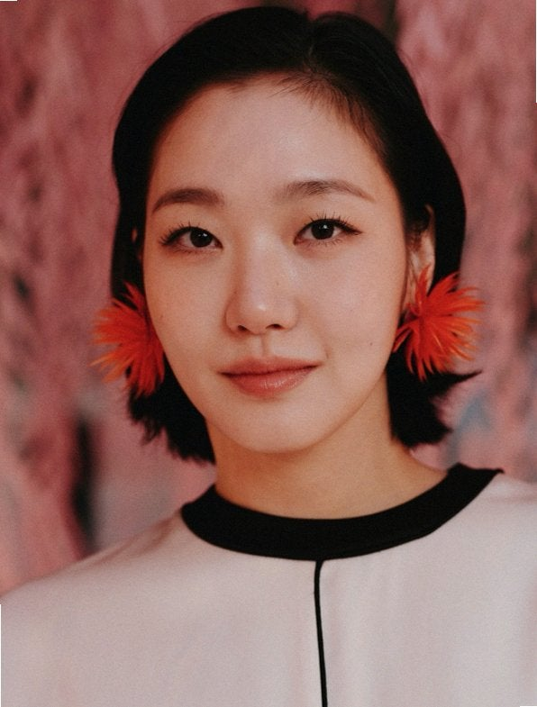
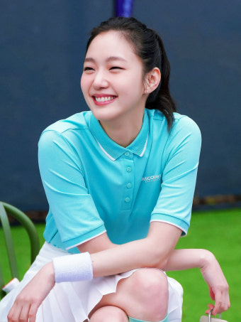
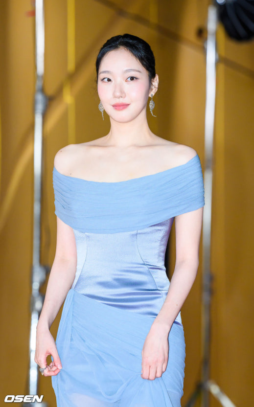

머리 모양마다 다른 얼굴
본 것작품마다 머리 길이를 바꿔, 숏컷부터 허리까지 오는 생머리까지 해 왔다.
그래서한 모습에 머무르지 않는 사람 같다.
← 메인으로2장 사람 · People

본 것작품마다 머리 길이를 바꿔, 숏컷부터 허리까지 오는 생머리까지 해 왔다.
그래서한 모습에 머무르지 않는 사람 같다.

본 것테니스복을 입은 사진에서 눈이 거의 감길 만큼 크게 웃고 있다.
그래서꾸미지 않은 웃음이라 보는 나도 편해진다.

본 것시상식 사진에서 하늘색 드레스를 입었는데, 드레스보다 차분한 표정이 먼저 눈에 들어온다.
그래서무엇을 입어도 자기 분위기로 만든다.
작업할 때 한 가지 모습에 머물지 않고 다른 얼굴을 시도해 본다.